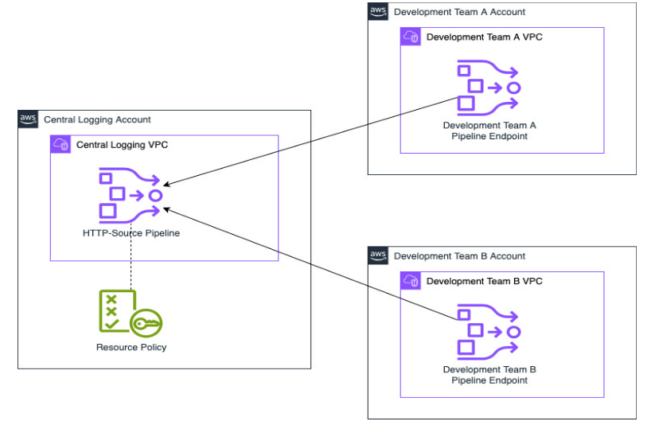
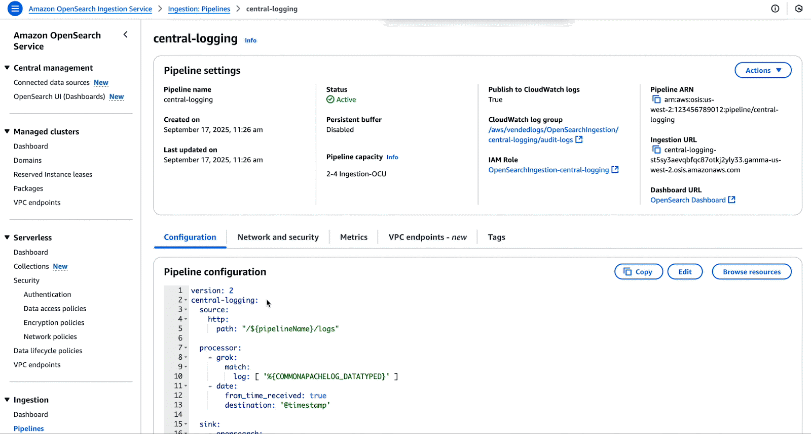
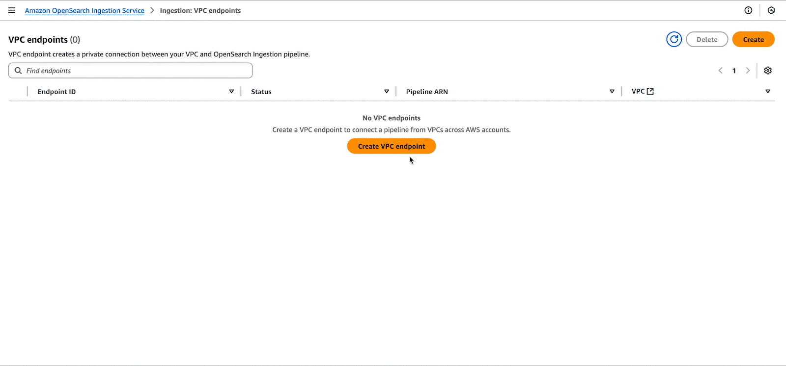

Blog 3
Công bố tính năng ingestion đa tài khoản cho Amazon OpenSearch Service
Bởi David Venable, ngày 19 tháng 9 năm 2025 | Amazon OpenSearch Service, Announcements, Intermediate (200)
Amazon OpenSearch Ingestion là một pipeline ingestion dữ liệu mạnh mẽ mà khách hàng AWS sử dụng cho nhiều mục đích khác nhau, chẳng hạn như khả năng quan sát (observability), phân tích (analytics), và tìm kiếm không cần ETL (zero-ETL search). Nhiều khách hàng ngày nay đẩy log, trace và metric từ các ứng dụng của họ vào OpenSearch Ingestion để lưu trữ và phân tích dữ liệu này.
Hôm nay, chúng tôi vui mừng thông báo rằng các pipeline của OpenSearch Ingestion hiện đã hỗ trợ ingestion đa tài khoản (cross-account ingestion) cho các nguồn dữ liệu dạng push như HTTP và OpenTelemetry (OTel). Các tổ chức giờ đây có thể sử dụng tính năng này để dễ dàng chia sẻ dữ liệu giữa các nhóm. Ví dụ, nhiều tổ chức có các nhóm chuyên trách observability trung tâm — giờ đây các nhóm này có thể tạo các pipeline OpenSearch Ingestion và chia sẻ chúng với các nhóm khác trong tổ chức của họ. Bạn cũng có thể sử dụng tính năng này để ingestion dữ liệu vào các domain của Amazon OpenSearch Service hoặc các collection Amazon OpenSearch Serverless trong các tài khoản khác.
Trước đây, việc chia sẻ các pipeline OpenSearch Ingestion giữa các tài khoản yêu cầu các nhóm phải sử dụng các tính năng của virtual private cloud (VPC) để chia sẻ quyền truy cập. Ví dụ, các nhóm có thể sử dụng VPC peering, vốn không phải lúc nào cũng khả thi, hoặc AWS Transit Gateway. Các tính năng ingestion đa tài khoản mới trong OpenSearch Ingestion có thể đơn giản hóa việc triển khai của bạn và giảm chi phí cho việc chia sẻ pipeline.
Tổng quan về giải pháp
Hãy cùng nhìn cách chia sẻ một pipeline từ một tài khoản logging trung tâm với hai tài khoản phát triển khác (A và B). Tài khoản logging trung tâm có thể tạo một pipeline OpenSearch Ingestion bằng cách sử dụng một nguồn dạng push, ví dụ như HTTP. Sau khi tạo pipeline, một thành viên của nhóm logging trung tâm có thể cấp quyền truy cập cho các nhóm khác. Họ có thể sử dụng một resource policy cung cấp quyền cho hai tài khoản nhóm còn lại để tạo các endpoint của pipeline. Sau khi thực hiện thay đổi này, pipeline OpenSearch Ingestion sẽ có sẵn để các nhóm khác sử dụng.
Sơ đồ dưới đây minh họa cấu trúc này.

Figure 1
Trong các phần tiếp theo, chúng sẽ minh họa cách triển khai giải pháp này.
Các điều kiện tiên quyết (Prerequisites)
Trước hết, tài khoản logging trung tâm phải có một VPC với hai tùy chọn được bật:
-
enableDnsSupport phải được đặt thành true
-
enableDnsHostnames phải được đặt thành true
Tài khoản logging trung tâm cũng phải tạo một pipeline OpenSearch Ingestion dạng push trong VPC. Đây có thể là một pipeline nhận log từ receiving logs from FluentBit hoặc OpenTelemetry telemetry.
Các tài khoản phát triển (development accounts) sẽ kết nối với pipeline cũng phải có VPC trong cùng một vùng (region) với các tùy chọn DNS giống nhau được bật:
-
enableDnsSupport phải được đặt thành true
-
enableDnsHostnames phải được đặt thành true
Tạo resource policy
Là chủ sở hữu của pipeline, bạn có thể tạo một resource policy cho phép hai tài khoản phát triển (development accounts) tạo các endpoint của pipeline dựa trên pipeline của bạn.
Dưới đây là một ví dụ về resource policy cho kịch bản này:
{
"Version": "2012-10-17",
"Statement": [
{
"Effect": "Allow",
"Principal": {
"AWS": [
"000000000000",
"999999999999"
]
},
"Action": "osis:CreatePipelineEndpoint",
"Resource": "arn:aws:osis:us-west-2:123456789012:pipeline/central-logging"
}
]
}
Bảng điều khiển OpenSearch Ingestion giúp việc tạo các policy này trở nên đơn giản, như minh họa trong ảnh chụp màn hình sau.

Figure 2
Tạo pipeline endpoint
Bây giờ khi tài khoản logging trung tâm đã chia sẻ quyền trên pipeline của họ, các tài khoản phát triển có thể tạo pipeline endpoint. Một pipeline endpoint là một kết nối từ một VPC đến một pipeline OpenSearch Ingestion.
Các tài khoản phát triển chịu trách nhiệm tạo các pipeline endpoint trong các VPC mà họ muốn kết nối từ đó. Họ tạo endpoint này trong các subnet cần thiết và cung cấp một security group. Security group này phải có một inbound rule cho phép truy cập cổng HTTPS qua cổng 443 từ bất kỳ nguồn nào mà các tài khoản phát triển cần để ingestion log.
Nhóm phát triển A có thể tạo một pipeline endpoint bằng cách sử dụng một lệnh tương tự như sau:
aws --region us-west-2 osis create-pipeline-endpoint \
--pipeline-arn arn:aws:osis:us-west-2:123456789012:pipeline/central-logging \
--vpc-options '{"SubnetIds":["subnet-123456789012345678","subnet-012345678912345678"],"SecurityGroupIds":["sg-123456789012345678"]}'
Nhóm phát triển A cũng có thể sử dụng bảng điều khiển (OpenSearch Ingestion console) để tạo pipeline endpoint.

Figure 3
Sau khi thực hiện thay đổi này, VPC của nhóm phát triển A sẽ có một pipeline endpoint. Pipeline endpoint này hiện cho phép ingestion dữ liệu vào central logging pipeline. Giờ đây, các Amazon Elastic Compute Cloud (Amazon EC2) instances,Amazon Elastic Container Service (Amazon ECS) tasks, Kubernetes pods, và các workload tính toán khác chạy trong VPC có thể ingestion dữ liệu log của chúng vào pipeline bằng các công cụ như FluentBit.
Đồng thời hoặc sau đó, nhóm phát triển B cũng có thể tạo một pipeline endpoint. Nhóm này sẽ tạo endpoint cho VPC riêng của họ.
Sau bước này, pipeline sẽ có hai pipeline endpoints, vì vậy cả hai nhóm đều có thể ingestion dữ liệu log của họ vào central logging VPC.
Dọn dẹp (Clean up)
Sau khi một pipeline endpoint được tạo, bất kỳ tài khoản nào cũng có thể xóa nó. Các nhóm phát triển trong kịch bản của chúng ta có thể sử dụng DeletePipelineEndpoint API để xóa endpoint khỏi tài khoản của họ. Ngoài ra, nếu tài khoản logging trung tâm cần loại bỏ một pipeline endpoint khỏi pipeline, họ có thể sử dụng RevokePipelineEndpointConnections API. Cả hai tùy chọn đều có sẵn trên OpenSearch Ingestion console.
Sau khi các pipeline endpoints bị xóa, nhóm logging trung tâm cũng có thể xóa luôn pipeline nếu họ không còn cần đến nó
Kết luận
Tính năng pipeline endpoint mới cho OpenSearch Ingestion giúp đơn giản hóa cách bạn có thể chia sẻ pipeline cho cross-account ingestion. Điều này có thể giúp các nhóm tận dụng những tính năng mạnh mẽ của OpenSearch Ingestion và mở ra những khả năng mới cho các nhóm hoặc tổ chức sử dụng nhiều tài khoản và VPC. Tính năng pipeline endpoint mới hiện đã có sẵn trong các AWS Regions nơi OpenSearch Ingestion được hỗ trợ.
Để bắt đầu với cross-account ingestion trong OpenSearch Ingestion, hãy tham khảo tài liệu OpenSearch Ingestion documentation hoặc thử tạo pipeline cross-account đầu tiên của bạn trên OpenSearch Ingestion console.
.
Giới thiệu về tác giả
| David Venable David là Kỹ sư Phần mềm cao cấp tại Amazon Web Services (AWS), hiện đang làm việc trong mảng quan sát hệ thống (observability) của OpenSearch. Anh cũng là người duy trì (maintainer) của dự án Data Prepper. |
|---|